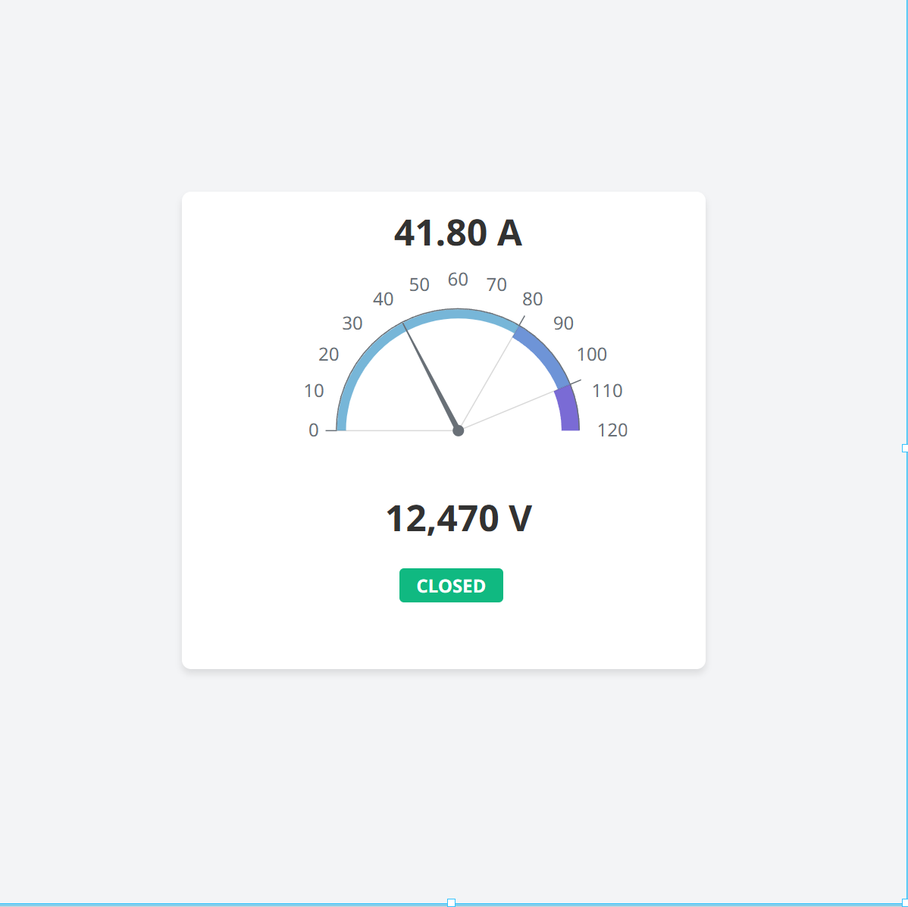
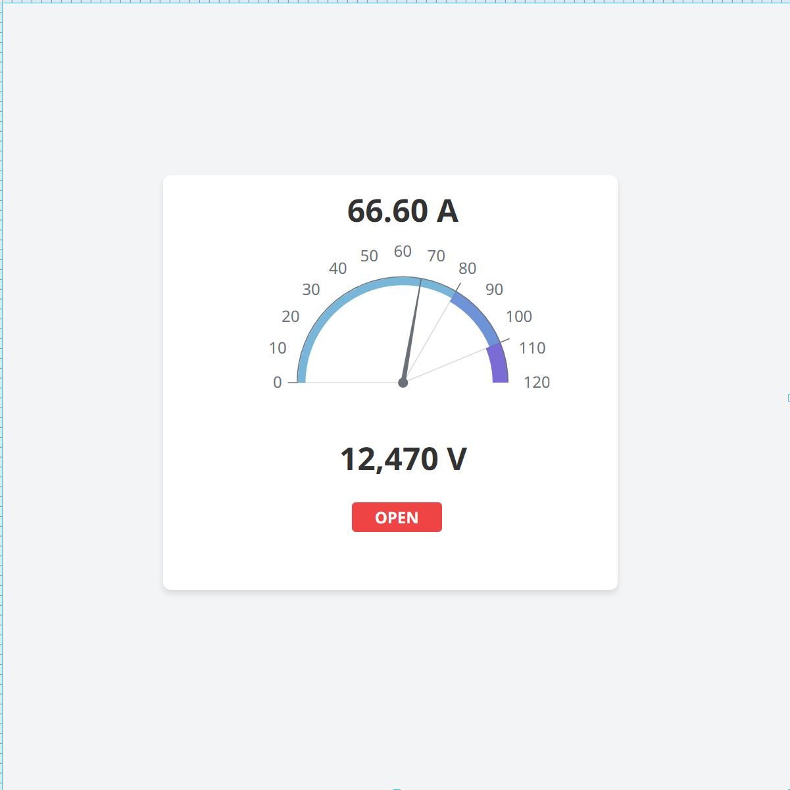
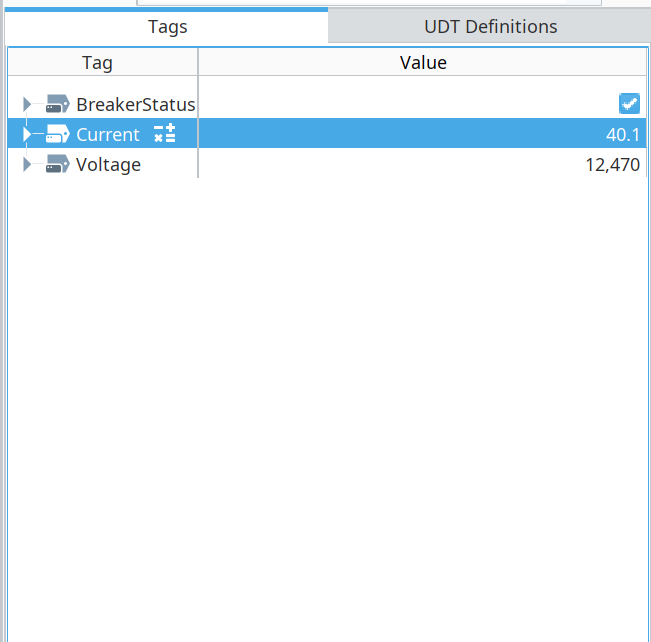

SCADA Monitoring Dashboard
The control-room view — a live SCADA HMI built in Ignition Perspective that reads a protective relay over Modbus TCP, displays its current, voltage, and breaker state on an operator dashboard, and raises an alarm the instant a fault appears.
SCADA is how a substation is watched and controlled from a distance. Building the HMI — connecting to field devices, mapping their data into tags, and laying out operator screens with alarms — is core SCADA integration work, and it's done on real platforms, not generic tools.
This project does exactly that on Ignition, one of the industry's leading SCADA platforms: it connects to a protective-relay simulation over Modbus, maps the relay's registers into OPC tags, and presents them the way a control room would — a gauge, a breaker indicator, and a live overcurrent alarm.
The data path runs from the relay all the way to the operator screen. Ignition connects to the Modbus device, OPC tags name and scale each value, and the Perspective view binds its components to those tags.
The HMI updates live as a simulator varies the relay's current. Under normal load the gauge sits low and the breaker reads green; when the current spikes past pickup, the reading jumps and the indicator flips to a red tripped state — the operator's cue that a fault has been cleared.


The dashboard reacting in real time as the relay's current changes — the gauge tracking, the indicator flipping, the alarm firing on overcurrent.
Each component is bound to an OPC tag that maps a Modbus register or coil into Ignition. Current is linearly scaled to undo the ×10 register encoding; the breaker indicator and overcurrent alarm are driven by expression bindings.
| Component | Shows | Binding |
|---|---|---|
| Radial gauge | Current (A) | OPC tag, linear scale (÷10) |
| Numeric display | Voltage (V) | OPC tag |
| Status indicator | Breaker state | Expression — green closed / red open |
| Alarm | Overcurrent | Expression on the pickup threshold |

A practical detail that has to be right: an OPC tag needs both its item path and its OPC server specified, and Modbus addressing is 1-based on the device side — the same off-by-one that shows up throughout industrial comms.
This dashboard consumes the exact Modbus data served by the substation protocol gateway — Ignition reads the same registers that project exposes, closing an end-to-end loop: a simulated relay serving data over Modbus, monitored on a real SCADA HMI. The overcurrent threshold traces back to the pickup logic in the feeder coordination study. Field device, protocol, and control room — one system.
The Ignition project export, tag configuration, dashboard screenshots in both states, and the live demo video.